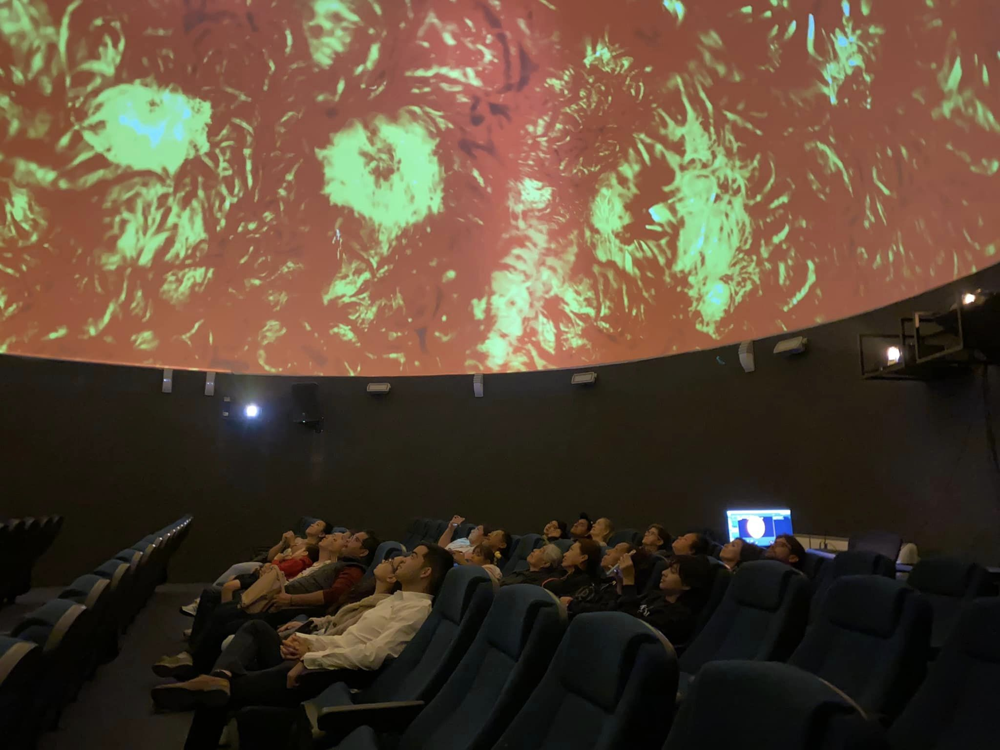
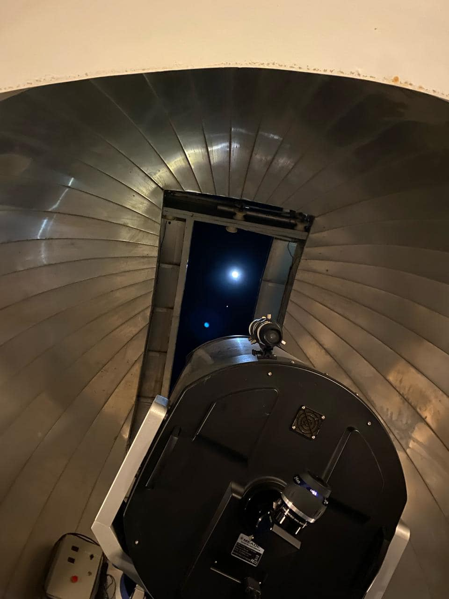

Las proyecciones en un domo planetario, también conocidas como proyecciones fulldome, son experiencias inmersivas que utilizan tecnología avanzada para crear simulaciones del cosmos. Las proyecciones se realizan en la cúpula hemisférica utilizando sistemas de proyección especializados que cubren toda la superficie interior del domo. Esto crea un campo de visión envolvente que sumerge a los espectadores en imágenes y videos.
Se suelen proyectar películas o documentales sobre el cosmos, astronomía, planetas, galaxias y fenómenos espaciales. Estos contenidos a menudo combinan imágenes reales capturadas por telescopios espaciales con visualizaciones generadas por computadora.
Los espectadores tienen la sensación de estar dentro del espacio gracias a la proyección envolvente. Esto permite explorar la estructura del universo, desde la Tierra hasta los confines del cosmos, de una manera que no es posible con una pantalla plana convencional.